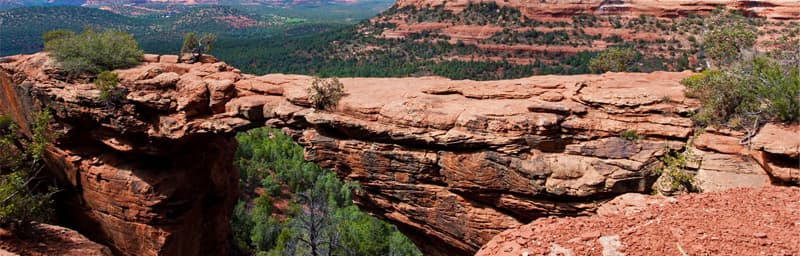

Седона - небольшой городок в Аризоне, заслуживающий большего!
Рассмотрим 5 причин, по которым Седона круче, чем Гранд Каньон!
-
Настоящий городок
-№1-
Седона - не аттракцион для туристов, там течёт своя жизнь

-
Жильё
Рекомендуем пожить в настоящем мотеле, всё как в кино!
-
Еда
Всегда заказывайте фирменный бургер, вы не разочаруетесь!
-
Сувениры
Не только китайского, но и местного производства!
-
-
Там есть Мост дьявола
-№2-
Да, по нему можно пройти! Если конечно вы осмелитесь
 -
Небольшая площадь
-№3-
Все достопримечательности находятся очень близко
-
Красивая дорога
-№4-
Ехать в Седону из Лас-Вегаса совсем не скучно!
-
Мало туристов
-№5-
Большинство едет в Гранд Каньон и толпится там
Заинтересовались?
Укажите предполагаемые даты поездки, и мы покажем вам лучшие предложения гостиниц в Седоне